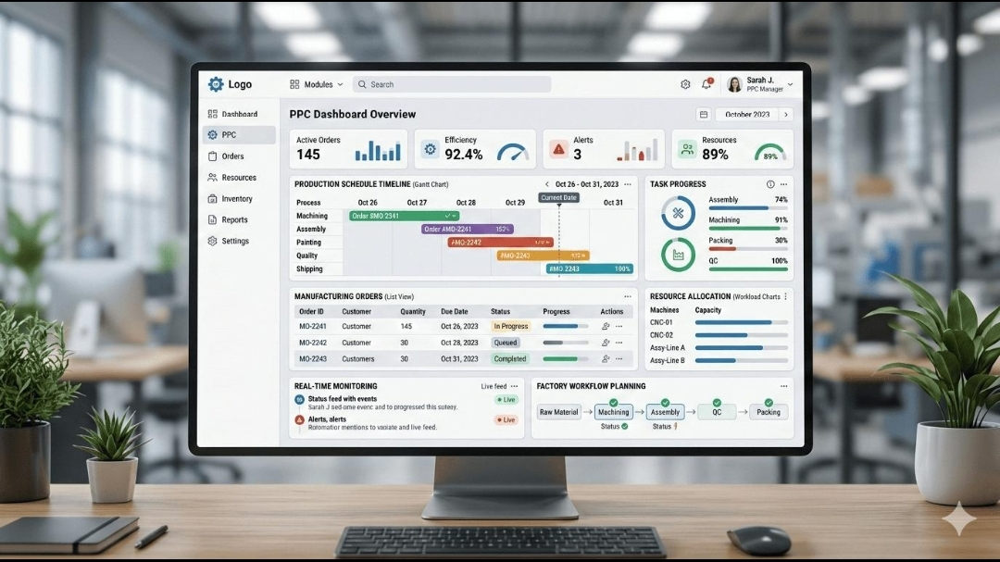
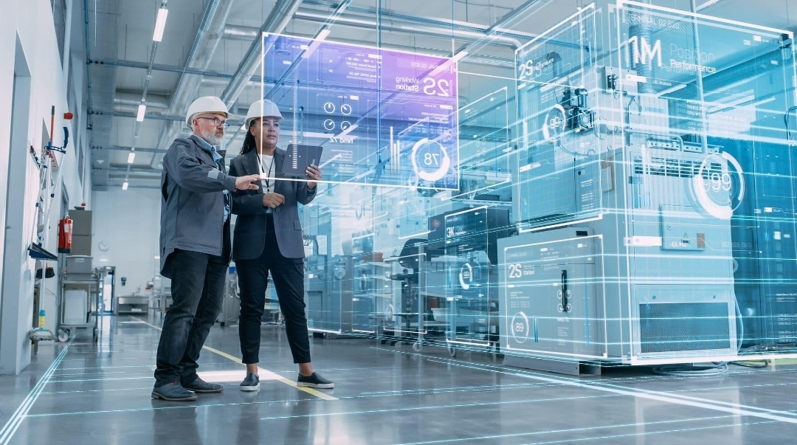
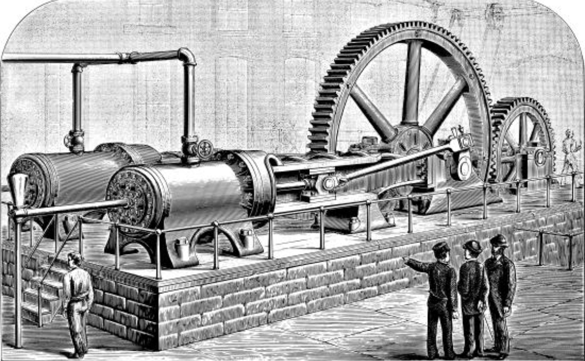
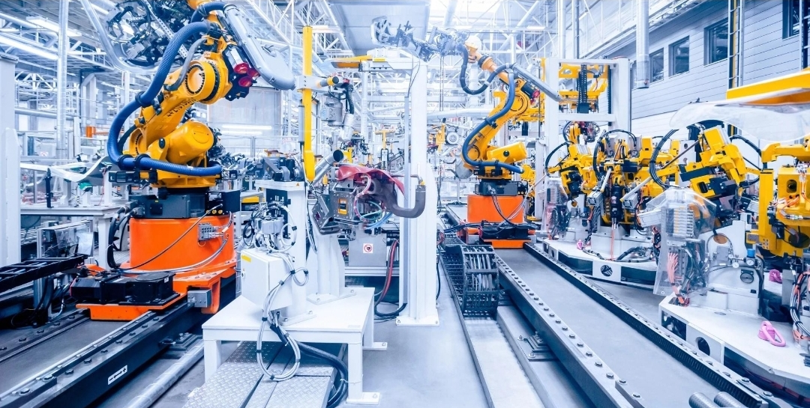

A engenharia de produção é uma área da engenharia que se dedica à otimização dos processos de produção, visando aumentar a eficiência e reduzir os custos.

"A Engenharia de Produçõa trata do projeto, aperfeiçoamento e implantações, de sistemas integrados de pessoas, materiais, infomações, equipamentos e energia, para a produção de bens e serviços, de maneira econômica, respeitando os preceitos éticos e culturais.Tem como base os conhecimentos especificos e as habilidades associadas ás ciências físicas, matemáticas e sociais, assim como aos princípios e métodos de análise da engenharia de projeto para especificar, predizer e avaliar os resultados obtidos por tais sistemas."

A Engenharia de Produção integra conhecimento de engenharia, administração e economia para planejar, organizar e melhorar processos produtivos.O profisional da área busca aumentar a produtividade,reduzir desperdícios,garantir a qualidade dos produtos e serviços e utilizar recursos de formas eficientes.Além disso, participa da gestão de pessoas, da logistica,do controle de custos e da tomada de decisões estratégicas, contribuindo para que empresas e organizações possam operar de forma mais eficiente e sustentável.
A evolução industrial marcou profundas transformações na forma de produzir bens e serviços. A primeira revolução industrial introduziu as máquinas a vapor;a segunda trouxe a produção em massa e a eletrcidadde; a terceira incorporou a informática e a automação; e a quarta revolução industrial,conhecida como artificial, Internet das Coisas (IoT), robótica e análise de dados.A Engenharia de Produção acompanha essas mundaças para desenvolver processos mais eficientes e inovadores.

A ética profissional orienta o comportamento do engenheiro de produção em suas decisões e atividades.O profissional deve agir com responsabilidade,honestidade e respeito as normas ténicas,garantido a segurança dos trabalhadores, a qualidade dos produtos, a preservação do meio ambiente e o compromisso com a sociedade.
O conhecimento do direito é essencial para que os processos produtivos estejam em conformidade com a legislação.O engenheiro de produção deve respeitar normas de segurança do trabalho, legislação ambiental,direitos trabalhaistas,contratos e responsabilidade civil.Esses conhecimentos contribuem para uma gestão eficiente, ética e dentro da lei.
